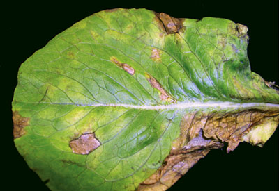
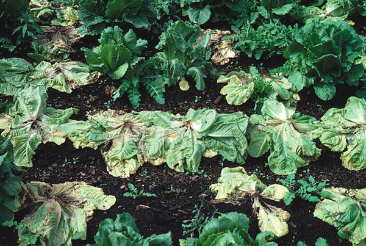
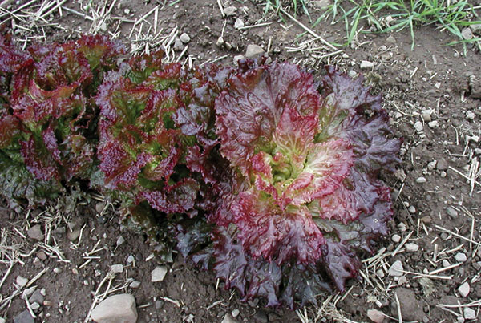

Downy Mildew
Downy Mildew is caused by a fungal-like water mold.
It is particularly common where temperatures are low
and leaves are wet for long periods. This is common in cool
season greenhouse production. Downy mildew lesions first appear
light green and then the leaf develops a yellow, chlorotic appearance.
Older lesions turn tan and papery.

Disease Control
- Crop Rotation is the first line of defense. Plough deep to bury diseased crop residue.
- Reduce the duration of leaf wetness by avoiding orerhead irrigation.
- Do not use poorly drained fields for early or late planting.
- Manage greenhouses to avoid long periods of leaf wetness.
- Good weed control practice and use wide spacing between planting rows
Lettuce Drop
Lettuce Drop is also referred to as white mold. The causal organism has many different hosts including weeds and vegetables. It is also a major disease of chicory and endive. On lettuce, the plant appears wilted and the outer leaves dorp to the ground while remaining attached to the plant.

Disease Control
- Growers who experience only occasional outbreaks during seasons of prolonged wet weather can get satisfactory control with practices that promote quick leaf drying. Control of weeds is important. Crop rows should be oriented parallel to the prevailing wind and the plants spaced widely in the row.
- In cases of severe infection, a minimum 5-year long rotation with non-host crops such as corn or forage grass.
- Flooding of the field between crops can promote spore release when no host is present and help reduct inocula.
- There are no resistant varieties
Aster Yellows
Aster Yellows is caused by a unicellular organism belonging to a group of organisms called phytoplasmas. They differ from bacteria in that they lack a cell wall and are smaller. The Aster Yellows infects the phloem sieve in lettuce(the food conducting cells). Symptoms include blanching and chlorosis of the young center leaves of lettuce plants. These leaves appear as short, thick stubs in the middle of the head.

Disease Control
- Rotation with grass family green manures helps by reducing the population of the pathogens in the soil.
- Plough before planting, instead of disking, to bury sclerotia.
- Plant lettuce in well-drained soil and control weeds to allow good air flow.
- Romaine and other upright lettuce varieties are likely to escape infection because the leaves do not touch the soil.

 price €4.50
price €4.50
 Price €8.50
Price €8.50